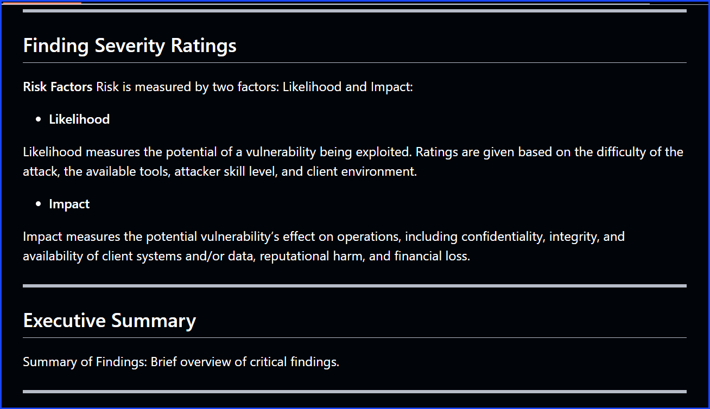
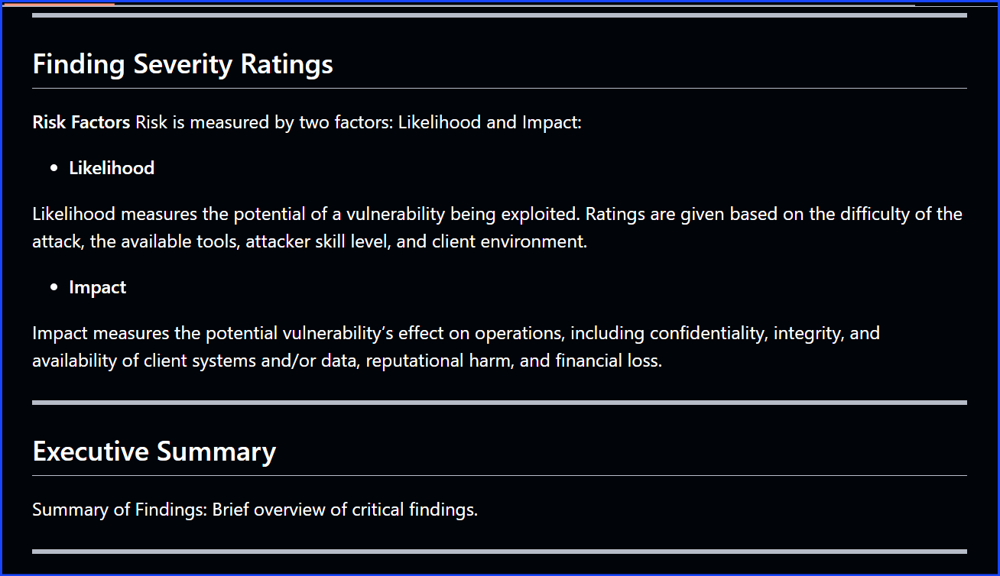

Hexterika Cyberlab
Hexterika Cyberlab is my dedicated space to showcase practical work, skills, and learning in cybersecurity and IT. It focuses on hands-on experience through labs, write-ups, and personal projects — reflecting my journey as a self-driven learner and aspiring professional in this field.
This section showcases my applied cybersecurity skills through hands-on labs, write-ups, and self-driven projects. It reflects my capabilities and commitment to delivering real value in security-focused roles and collaborations.
My Cybersecurity Journey
I hold key cybersecurity certifications that validate my foundational knowledge:
- CompTIA Security+
- Certified in Cybersecurity (CC) by ISC2
- Jr Penetration Tester Learning Path (TryHackMe)
My practical experience includes hands-on challenges like CTFs, TryHackMe labs, PortSwigger Web Security Academy, and running a personal virtual home lab.
At the Synchrotron Light Research Institute (Thailand), I gained valuable IT experience supporting corporate environments and networks.
I actively participate in Bugcrowd's Bug Bounty Program to sharpen real-world ethical hacking skills.
My GitHub repositories host detailed write-ups, walkthroughs, and mock reports documenting my learning journey and projects.
This portfolio reflects ongoing growth as I organize and deepen my cybersecurity expertise.
Skills & Tools
These are the core skills and technologies I use regularly in my penetration testing and cybersecurity work:
- Penetration Testing Tools: Kali Linux, Nmap, Burp Suite, Metasploit, Wireshark
- Operating Systems: Linux (Ubuntu, Kali), Windows, Windows Server (Active Directory)
- Programming & Scripting: Python, Bash, PowerShell
- Web Technologies: HTTP, HTTPS, OWASP Top 10, SQL Injection, XSS
- Cloud & Virtualization: AWS (basic), VirtualBox, Docker
- Other Skills: Vulnerability Assessment, Network Reconnaissance, Social Engineering Awareness
üö© Featured Project
Here's a highlight from my cybersecurity work — a mock penetration test report simulating real-world assessment and documentation standards.
Below are sample screenshots from my mock penetration testing report. These demonstrate how I structure findings, provide remediation steps, and document methodology.

 


You can view the full mock penetration testing report on GitHub:
View Report on GitHubüß© Sample Works & Projects
Below is a collection of my cybersecurity projects and write-ups hosted on GitHub. These include walkthroughs, mock reports, bug bounty findings, and self-driven labs — each reflecting skills I've practiced and refined through hands-on learning.